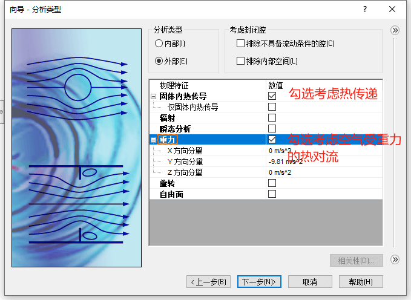

共轭传热
两种热属性的物理材料之间通过介质或者直接接触，发生的一种耦合换热现象
热流体分析支持使用计算流体力学 (CFD) 分析共轭热传导（固体中的热传导、流体和固体之间的对流以及辐射），可以轻松研究冷却和设计变更对零部件温度的影响。您可以快速确定设计内部和周围的流体流动的影响，以确保正确的热性能、产品质量和安全。
使用真实气体创建一个稳态的耦合传热分析
创建项目

计算域
默认计算域太大影响计算性能，调整计算域变小处理
流体子域
定义多个流体区域

使用真实气体
边界条件
热源
目标
运行结果
在流体和固体区域生成温度图解
切面图
流动轨迹
补充
流热固耦合，更加复杂，除热耦合外，还要求考虑两相的受力、位移/形变的平衡。数学上，不仅要考虑两相热方程的一体求解，还需要耦合求解动量方程（包括形变、应力）。
流热固耦合，更加复杂，除热耦合外，还要求考虑两相的受力、位移/形变的平衡。数学上，不仅要考虑两相热方程的一体求解，还需要耦合求解动量方程（包括形变、应力）。
工业应用中，热耦合和流热固耦合，都是常见的。前者对应可忽略固体结构变形的情况，后者对应必须考虑形变（内部传热导致或者外界因素导致固体变形）的情形。
总之，前者仅考虑热耦合，后者要综合考虑力/位移和热的耦合。